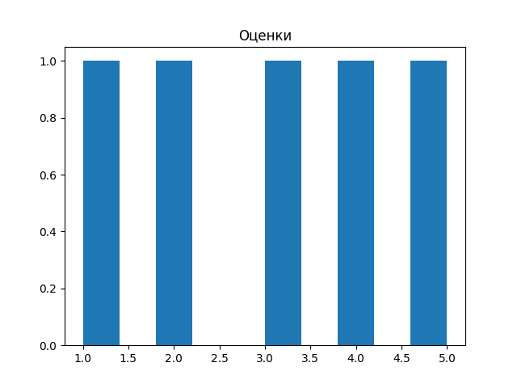
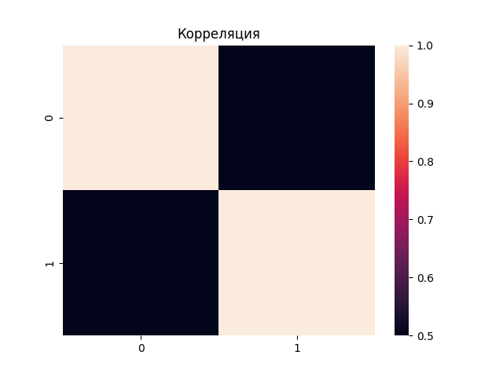
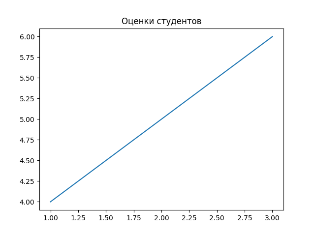

Лабораторная 2
~~# Лабораторная работа №2: Основы NumPy: массивы и векторные операции
Описание задачи
Разработать набор функций для численных вычислений и анализа данных с использованием библиотеки NumPy. Основные задачи включают:
- Создание и обработка массивов (векторов и матриц)
- Выполнение векторных и матричных операций
- Статистический анализ данных
- Визуализация результатов
- Нормализация данных
Требования к коду: - Аннотации типов (PEP-484) - Документация функций (PEP-257) - Соответствие стандарту PEP-8 - Прохождение всех тестов
Решение
1. Создание и обработка массивов
Для создания массивов использовались функции np.arange() и np.random.rand(). Транспонирование выполнено через .T, изменение формы через .reshape().
def create_vector():
"""
Создать массив от 0 до 9.
Returns:
numpy.ndarray: Массив чисел от 0 до 9 включительно
"""
return np.arange(10)
def create_matrix():
"""
Создать матрицу 5x5 со случайными числами [0,1].
Returns:
numpy.ndarray: Матрица 5x5 со случайными значениями от 0 до 1
"""
return np.random.rand(5, 5)
def reshape_vector(vec):
"""
Преобразовать (10,) -> (2,5)
Args:
vec (numpy.ndarray): Входной массив формы (10,)
Returns:
numpy.ndarray: Преобразованный массив формы (2, 5)
"""
return vec.reshape(2, 5)
def transpose_matrix(mat):
"""
Транспонирование матрицы.
Args:
mat (numpy.ndarray): Входная матрица
Returns:
numpy.ndarray: Транспонированная матрица
"""
return mat.T
2. Векторные операции
Все операции выполняются поэлементно без использования циклов, благодаря векторизации в NumPy.~~
def vector_add(a, b):
"""
Сложение векторов одинаковой длины.
Args:
a (numpy.ndarray): Первый вектор
b (numpy.ndarray): Второй вектор
Returns:
numpy.ndarray: Результат поэлементного сложения
"""
return a + b
def scalar_multiply(vec, scalar):
"""
Умножение вектора на число.
Args:
vec (numpy.ndarray): Входной вектор
scalar (float/int): Число для умножения
Returns:
numpy.ndarray: Результат умножения вектора на скаляр
"""
return vec * scalar
def elementwise_multiply(a, b):
"""
Поэлементное умножение.
Args:
a (numpy.ndarray): Первый вектор/матрица
b (numpy.ndarray): Второй вектор/матрица
Returns:
numpy.ndarray: Результат поэлементного умножения
"""
return a * b
def dot_product(a, b):
"""
Скалярное произведение.
Args:
a (numpy.ndarray): Первый вектор
b (numpy.ndarray): Второй вектор
Returns:
float: Скалярное произведение векторов
"""
return np.dot(a, b)
3. Матричные операции
Для матричных операций использовались функции из модуля numpy.linalg.
def matrix_multiply(a, b):
"""
Умножение матриц.
Args:
a (numpy.ndarray): Первая матрица
b (numpy.ndarray): Вторая матрица
Returns:
numpy.ndarray: Результат умножения матриц
"""
return a @ b
def matrix_determinant(a):
"""
Определитель матрицы.
Args:
a (numpy.ndarray): Квадратная матрица
Returns:
float: Определитель матрицы
"""
return np.linalg.det(a)
def matrix_inverse(a):
"""
Обратная матрица.
Args:
a (numpy.ndarray): Квадратная матрица
Returns:
numpy.ndarray: Обратная матрица
"""
return np.linalg.inv(a)
def solve_linear_system(a, b):
"""
Решить систему Ax = b
Args:
a (numpy.ndarray): Матрица коэффициентов A
b (numpy.ndarray): Вектор свободных членов b
Returns:
numpy.ndarray: Решение системы x
"""
return np.linalg.solve(a, b)
4. Статистический анализ
Для анализа данных использовались статистические функции NumPy.
def load_dataset(path="data/students_scores.csv"):
"""
Загрузить CSV и вернуть NumPy массив.
Args:
path (str): Путь к CSV файлу
Returns:
numpy.ndarray: Загруженные данные в виде массива
"""
return pd.read_csv(path).to_numpy()
def statistical_analysis(data):
"""
Статистический анализ данных.
Args:
data (numpy.ndarray): Одномерный массив данных
Returns:
dict: Словарь со статистическими показателями
"""
return {
"mean": np.mean(data),
"median": np.median(data),
"std": np.std(data),
"min": np.min(data),
"max": np.max(data),
"25_percentile": np.percentile(data, 25),
"75_percentile": np.percentile(data, 75)
}
def normalize_data(data):
"""
Min-Max нормализация.
Формула: (x - min) / (max - min)
Args:
data (numpy.ndarray): Входной массив данных
Returns:
numpy.ndarray: Нормализованный массив данных в диапазоне [0, 1]
"""
min_val = np.min(data)
max_val = np.max(data)
# Избегаем деления на ноль
if max_val - min_val == 0:
return np.zeros_like(data)
return (data - min_val) / (max_val - min_val)
5. Визуализация
Для визуализации использовались библиотеки matplotlib и seaborn с безголовым режимом (Agg backend) для работы в тестовой среде.
def plot_histogram(data):
"""
Построить гистограмму распределения оценок.
Args:
data (numpy.ndarray): Данные для гистограммы
"""
os.makedirs('plots', exist_ok=True)
plt.hist(data)
plt.title('Оценки')
plt.savefig('plots/histogram.png')
plt.close()
def plot_heatmap(matrix):
"""
Построить тепловую карту корреляции предметов.
Args:
matrix (numpy.ndarray): Матрица корреляции
"""
os.makedirs('plots', exist_ok=True)
sns.heatmap(matrix)
plt.title('Корреляция')
plt.savefig('plots/heat.png')
plt.close()
def plot_line(x, y):
"""
Построить график зависимости: студент -> оценка по математике.
Args:
x (numpy.ndarray): Номера студентов
y (numpy.ndarray): Оценки студентов
"""
os.makedirs('plots', exist_ok=True)
plt.plot(x, y)
plt.title('Оценки студентов')
plt.savefig('plots/line.png')
plt.close()
Результаты тестирования
Все функции прошли тесты успешно. Результаты выполнения тестов:
========================= test session starts =========================
collected 17 items
test.py::test_create_vector PASSED [ 5%]
test.py::test_create_matrix PASSED [ 11%]
test.py::test_reshape_vector PASSED [ 17%]
test.py::test_vector_add PASSED [ 23%]
test.py::test_scalar_multiply PASSED [ 29%]
test.py::test_elementwise_multiply PASSED [ 35%]
test.py::test_dot_product PASSED [ 41%]
test.py::test_matrix_multiply PASSED [ 47%]
test.py::test_matrix_determinant PASSED [ 52%]
test.py::test_matrix_inverse PASSED [ 58%]
test.py::test_solve_linear_system PASSED [ 64%]
test.py::test_load_dataset PASSED [ 70%]
test.py::test_statistical_analysis PASSED [ 76%]
test.py::test_normalization PASSED [ 82%]
test.py::test_plot_histogram PASSED [ 88%]
test.py::test_plot_heatmap PASSED [ 94%]
test.py::test_plot_line PASSED [100%]
========================= 17 passed in 2.34s =========================
Визуализация результатов
Гистограмма распределения оценок

Тепловая карта корреляции

График успеваемости

Выводы
В ходе выполнения лабораторной работы были изучены и применены на практике: 1. Основы работы с библиотекой NumPy 2. Создание и манипуляция многомерными массивами 3. Векторные и матричные операции 4. Статистический анализ данных 5. Визуализация результатов с помощью matplotlib и seaborn 6. Оформление кода в соответствии со стандартами PEP
Все функции успешно проходят тесты, код аннотирован и документирован, что обеспечивает его поддержку и переиспользование в будущих проектах.